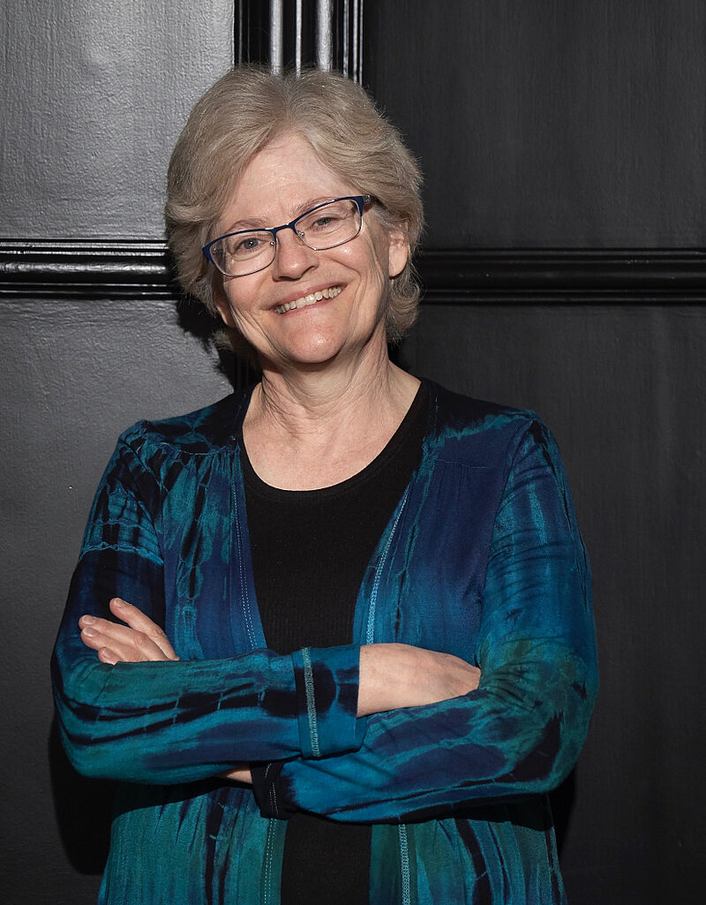

Judith Bronstein
University Distinguished Professor · Departamento de Ecologia e Biologia Evolutiva, Universidade do Arizona
Tucson, Arizona, Estados Unidos
- Ecologia e evolução de mutualismos
- Conflitos de interesse em interações interespecíficas
- Trapaça em mutualismos
- Efeitos dependentes do contexto
- Mutualismos de polinização
- Ameaças antropogênicas aos mutualismos
Sobre
University Distinguished Professor no Departamento de Ecologia e Biologia Evolutiva (EEB) da Universidade do Arizona desde 2012, onde leciona desde 1989. Sua trajetória acadêmica inclui os graus de A.B. em Estudos Independentes pela Brown University (1979), M.Sc. em Ecologia e Biologia Evolutiva pela Universidade de Michigan (1981) e Ph.D. pela mesma universidade (1986). Realizou pós-doutorados no Centre Louis Emberger (CNRS), em Montpellier, França (bolsa NATO, 1987), e na Universidade de Alberta, Canadá (bolsa Isaak Walton Killam, 1988). Atuou como Program Director na National Science Foundation (Divisão de Biologia Ambiental, 2007–2008) e foi Editora-Chefe da revista The American Naturalist (2013–2017). É Fellow da Ecological Society of America (desde 2016) e editora do livro Mutualism (Oxford University Press, 2015).
Sua pesquisa investiga a ecologia e a evolução de interações interespecíficas, com ênfase especial nos mutualismos. Entre as questões centrais que explora estão os conflitos de interesse entre parceiros mutualistas, as causas e consequências da trapaça dentro dessas interações, os efeitos dependentes do contexto que fazem com que mutualismos e antagonismos se manifestem de formas distintas em diferentes ambientes, e as ameaças que atividades humanas representam para mutualismos ecologicamente fundamentais. Estuda empiricamente mutualismos de polinização em desertos, pradarias desérticas e habitats montanos no Arizona e no Colorado.
